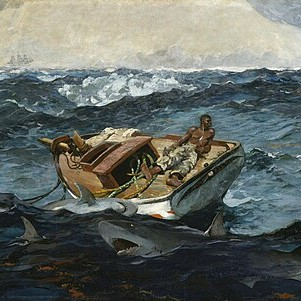
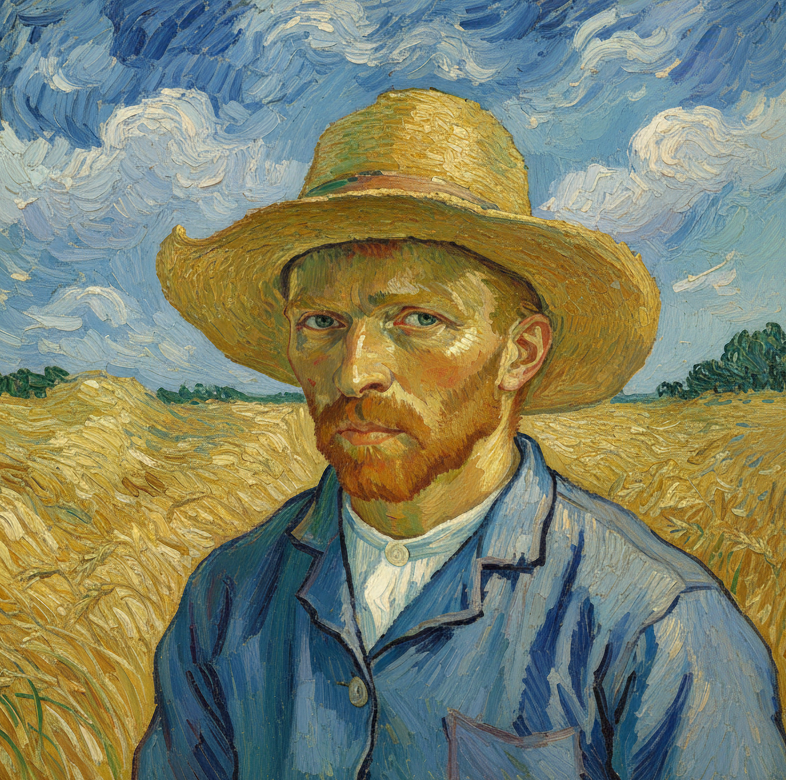

Mona Lisa (sau La Gioconda) este probabil cea mai faimoasă operă de artă din lume. Pictată de Leonardo da Vinci la începutul secolului al XVI-lea (aproximativ între 1503 și 1506, deși a continuat să lucreze la ea până în 1517), tabloul ascunde detalii fascinante care depășesc simpla imagine a unei femei care zâmbește.

Venus din Milo (sau Afrodita din Milo) este, fără îndoială, cea mai cunoscută sculptură a lumii antice. Deși este la fel de celebră, povestea ei este plină de controverse și detalii tehnice care o fac unică.A fost descoperită în 1820 pe insula grecească Milos (de unde și numele) de către un țăran pe nume Yorgos Kentrotas, care căuta pietre pentru construcție.
Este cel mai mare tablou din Muzeul Luvru. Are dimensiuni impresionante: aproximativ 6,77 metri înălțime și 9,94 metri lățime. Suprafața sa totală de aproape 67 de metri pătrați îl face să pară mai degrabă o fereastră uriașă către o altă lume decât o simplă pictură.